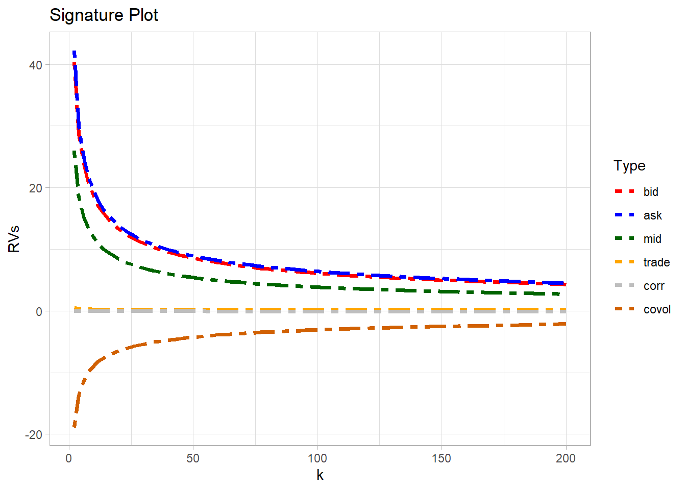
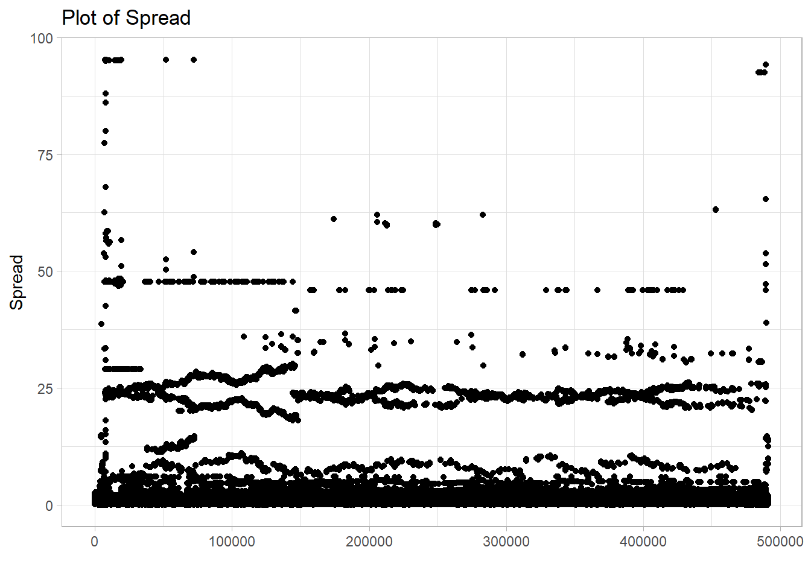
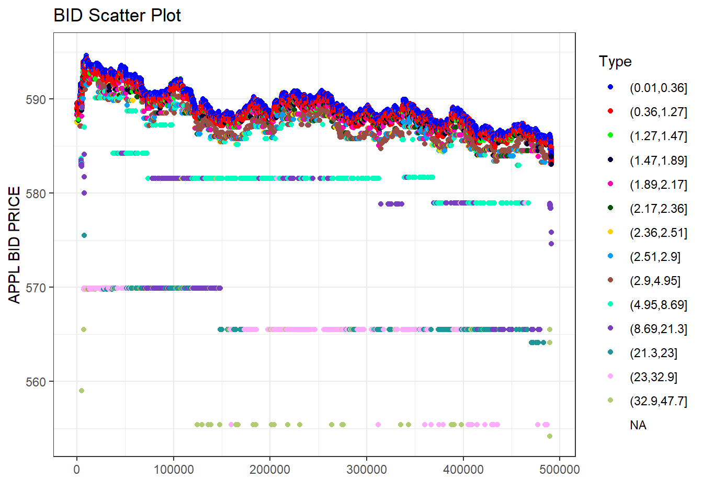
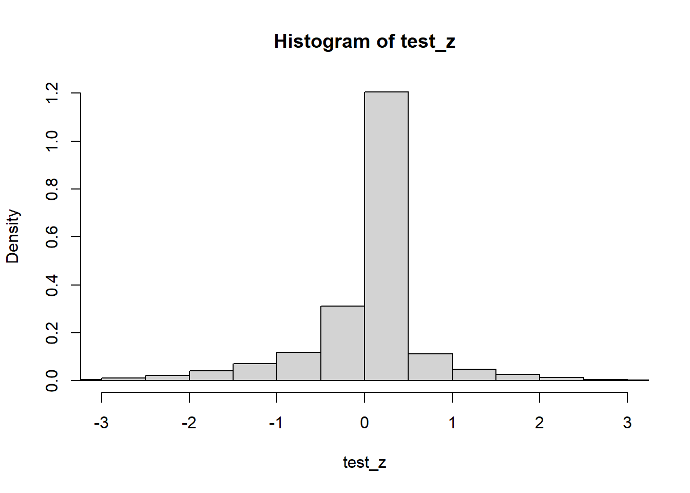

Note: 이 페이지는 시카고대학교 Per Mykland 교수님의 FINM 33170 and STAT 33910 수업 과제 7번의 1번 문제에 관한 내용입니다. 제가 작성하는 내용이 정답이 아님 (사실 정답을 모름) 을 미리 알려드립니다. 오류 및 문의사항은 metrics@kakao.com 으로 메일주시면 감사하겠습니다
R code 블럭과 Python code 블럭은 다음과 같이 색깔로 구분하겠습니다. 결과창은 동일하게 Ivory 색 블럭으로 표시됩니다.
# "이것은 R 코드 입니다."# "이것은 Python 코드 입니다."Retrieve the bid and offer prices for Apple (AAPL) and Google (GOOG) for Dec 3, 2012. The data are from the TAQ database in WRDS
wd_win = "G:/공유 드라이브/Project_TBD/Stock_Data/Misc"
wd_mac = "/Volumes/GoogleDrive/공유 드라이브/Project_TBD/Stock_Data/Misc"
fn = list.files(path=wd_win, pattern = '.csv')
trades = read.csv(paste(wd_win,fn[2],sep='/'))
quotes = read.csv(paste(wd_win,fn[1],sep='/'))
dim(trades)## [1] 70182 7dim(quotes)## [1] 495848 6head(trades)## DATE TIME_M SYM_ROOT SYM_SUFFIX SIZE PRICE TR_CORR
## 1 20121203 4:00:01.360 AAPL NA 100 589.50 0
## 2 20121203 4:04:09.043 AAPL NA 145 589.50 0
## 3 20121203 4:04:31.208 AAPL NA 300 589.32 0
## 4 20121203 4:12:19.971 AAPL NA 100 590.21 0
## 5 20121203 4:31:10.157 AAPL NA 100 589.90 0
## 6 20121203 4:53:04.991 AAPL NA 100 589.34 0head(quotes)## DATE TIME_M SYM_ROOT SYM_SUFFIX BID ASK
## 1 20121203 4:00:01.084 AAPL NA 589.50 589.60
## 2 20121203 4:02:11.715 AAPL NA 589.50 589.95
## 3 20121203 4:04:03.310 AAPL NA 589.50 589.73
## 4 20121203 4:04:09.043 AAPL NA 588.25 589.95
## 5 20121203 4:04:09.048 AAPL NA 588.25 589.50
## 6 20121203 4:04:21.689 AAPL NA 588.25 589.38trades2 =
trades[,c(2,6)] %>%
filter(PRICE != 0) %>%
drop_na()
quotes2 =
quotes[,c(2,5,6)] %>%
mutate(spread = ASK - BID) %>%
filter(BID !=0 & ASK !=0) %>%
filter(spread < 100) %>%
drop_na()Use any program to construct signature plots for the realized volatility of the bid and the offer(i.e., ask), the midquote ((bid+offer)/2), as well as the transaction log prices. Also provide a plot for the realized co-volatility between bid and ask log prices.
We focus on a single asset traded in a liquid financial market.We assume that the sample-path of the corresponding (latent)price process,\(\{S∗t,0≤t\}\), is continuous and determined by the stochastic differential equation(sde)
\[r_t = d\log\left(S_t^*\right) =\sigma_t dW_t\] where \(W_t\) denotes a standard Brownian motion, and the spot volatility process \(\sigma_t\) is predictable and has a continuous sample path. We assume that \(\sigma_t\) and \(W_t\) processes are uncorrelated and, for convenience, we refer to the unit time interval as a day.
Primary interest centers on forecasting the (latent) integrated volatility over daily and longer inter-daily horizons. Specifically, we define the one-period integrated volatility,
\[IV_{t+1} = \int_{t}^{t+1} \sigma_\tau^2 d\tau\]
and, for \(m\) a positive integer, the corresponding multi-period measure,
\[IV_{t+1:t+m} = \sum_{j=1}^m IV_{t+j}\]
In this context, \(IV_t\) equals the quadratic return variation which, in turn, provides a natural measure of ex-post return variability.
Integrated volatility is not directly observable but, as highlighted by many papers, the corresponding RVs provide consistent estimate of \(IV_t\). The standard RV measure is simply introduced as below.
Realized volatility [RV] is a non-parametric ex-post estimate of the return variation. The most obvious realized volatility measure is the sum of finely-sampledsquared return realizations over a fixed time interval.
\[RV_t^*(h) = \sum_{i=1}^{1/h} r_{t-1+ih}^{*(h)2}\], where \(1/h\) is assumed to be a positive integer and \(r_{t}^{*(h)} = \log(S_t^*)-log(S_{t-s}^*)\). Formally, \(RV_{t}^{*}(h)\) is uniformly consistent for \(IV_t\) as \(h \rightarrow 0\), i.e., the intraday sampling frequency goes to infinity.
A microstructure bias, if operative, will probably manifest itself as sampling frequency increases by distorting the average realised volatility. We construct a plot of average realised volatility against sampling frequency, which we call the “volatility signature plot” This helps to reveal the severity of microstructure bias as sampling frequency increases, and can be useful in guiding the selection of sampling frequency. We can also use the volatility signature plots to characterise different market microstructures.
Interestingly, it turns out that the volatility signature has the same form as the variance-time function, which has been extensively studied in finance. However, while there is no information in the volatility signature that is not also present in high-frequency return autocorrelations, the two are complements, not substitutes, as the information relevant for construction and interpretation of realised volatilities is more directly and transparently revealed in the volatility signature plot.
bid_series = log(quotes2$BID)
ask_series = log(quotes2$ASK)
mid_series = log((quotes2$BID + quotes2$ASK)/2)
price_series = log(trades2$PRICE)ARV = function(x, y=x, k){
#overlap delta(x_i)
diff_x = diff(x, lag=k)
diff_y = diff(y, lag=k)
ARV = sum(diff_x * diff_y) / k
if (ARV > 0){
result = sqrt(ARV*250)
}
else {
result = -sqrt(-ARV*250)
}
return(result)
}num_k = 100
step = 2
max_k = num_k * step
ARVs = data.frame(bid = c(1:num_k)*0,
ask = c(1:num_k)*0,
mid = c(1:num_k)*0,
trade = c(1:num_k)*0,
covol = c(1:num_k)*0
)
for (i in 1:num_k){
ARVs[i,1] = ARV(bid_series, bid_series, step*i)
ARVs[i,2] = ARV(ask_series, ask_series, step*i)
ARVs[i,3] = ARV(mid_series, mid_series, step*i)
ARVs[i,4] = ARV(price_series, price_series, step*i)
# Realized Covariation of Bid and Ask
ARVs[i,5] = ARV(bid_series, ask_series, step*i)
}
ARVs =
ARVs %>%
rowwise() %>%
mutate(corr= covol/(bid*ask))
ARVs['k'] = seq(step,max_k,step)
#ARVs$ID = seq.int(nrow(ARVs))
head(ARVs)## # A tibble: 6 x 7
## # Rowwise:
## bid ask mid trade covol corr k
## <dbl> <dbl> <dbl> <dbl> <dbl> <dbl> <dbl>
## 1 40.3 42.2 26.0 0.472 -18.9 -0.0111 2
## 2 28.8 30.0 18.4 0.364 -13.7 -0.0158 4
## 3 23.7 24.7 15.1 0.316 -11.4 -0.0194 6
## 4 20.5 21.5 13.1 0.290 -9.77 -0.0222 8
## 5 18.4 19.3 11.8 0.273 -8.91 -0.0250 10
## 6 16.9 17.7 10.8 0.260 -8.11 -0.0272 12
Although high-frequency microstructural effects will also be small for sampling intervals larger k, realised volatility estimates constructed from larger return intervals will begin to suffer from a higher sampling error. There is a trade-off between minimising microstructural bias and minimising sampling error


For the same data, compute the statistic \(L_T^{(n,d)}\) from the previous problem set, as well as \(\widehat{QV}\). Recall that $ L_T^{(n,d)}/$ is asymptotically \(N(0,1)\) if the \(X\) process is an Ito process. On this basis, test the null hypothesis \(H_0\) that the \(X\) process is an Ito process.
\[L_{t}^{(n,d)}=\sum_{t_{i+1}\le t}\Delta X_{t_{i-1}}\Delta X_{t_{i}}\] where \(\Delta X_{t_{i-1}}=X_{t_{i}}-X_{t_{i-1}}\quad\Delta X_{t_{i}}=X_{t_{i+1}}-X_{t_{i}}\)
## Min. 1st Qu. Median Mean 3rd Qu. Max.
## -36.96480000 -0.00023600 0.00000000 -0.00296394 0.00000000 1.15793800## Min. 1st Qu. Median Mean 3rd Qu. Max.
## -6.12000000 -0.01000000 0.00000000 -0.00981701 0.00000000 3.97270000## Min. 1st Qu. Median Mean 3rd Qu. Max.
## -78.65013227 -0.00235544 0.12636432 0.00000000 0.12636432 51.26286564
Determine a reasonable choice of J and K for using TSRV based on transaction log prices.
Source